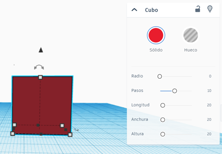
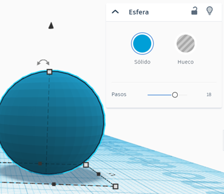
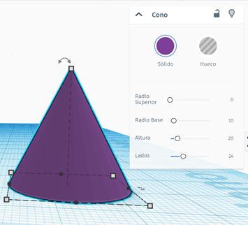
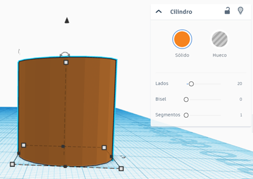

En Tinkercad, cuando trabajas con una figura, puedes ajustar varias opciones para personalizar tu diseño. A continuación, exploraremos cómo modificar diferentes figuras geométricas:
1. Cubo
El cubo es una figura geométrica de seis caras iguales. Sus modificadores permiten ajustar su forma, tamaño y características visuales como la redondez de sus esquinas. Consulta la siguiente ilustración para más detalles:

- Sólido/Hueco:
- Sólido: El cubo estará completamente lleno, como un bloque de juguete.
- Hueco: El cubo tendrá un espacio vacío adentro, como una caja sin tapa.
- Radio: Redondea las esquinas del cubo.
- Pasos: Hace que las esquinas se vean más suaves o más cuadradas.
- Longitud, Anchura y Altura: Cambia el tamaño del cubo hacia los lados, adelante y arriba.
2. Esfera
La esfera es un objeto completamente redondo. Los modificadores permiten controlar su suavidad y si está sólida o hueca. Mira la siguiente ilustración para más detalles:

- Sólido/Hueco:
- Sólido: La esfera estará llena, como una pelota.
- Hueco: La esfera tendrá un hueco en el medio, como una burbuja.
- Pasos: Hace que la esfera se vea más suave o con menos lados.
3. Cono
El cono es una figura con una base circular y una punta. Sus modificadores ajustan tanto la base como la altura y si es sólido o hueco. Observa la siguiente ilustración para más detalles:

- Sólido/Hueco:
- Sólido: El cono estará lleno, como un cono de helado.
- Hueco: El cono tendrá un espacio vacío adentro, como un sombrero de fiesta.
- Radio Superior: Cambia el tamaño de la parte de arriba del cono.
- Radio Base: Cambia el tamaño de la base del cono.
- Altura: Cambia qué tan alto es el cono.
- Lados: Cambia cuántos lados tiene la base del cono, haciéndola más circular o con más ángulos.
4. Cilindro
El cilindro tiene dos bases circulares y lados rectos. Con los modificadores se pueden ajustar la cantidad de lados, su solidez y la suavidad de los bordes. Consulta la siguiente ilustración para más detalles:

- Sólido/Hueco:
- Sólido: El cilindro estará lleno, como una batería de juguete.
- Hueco: El cilindro tendrá un espacio vacío en el centro, como un tubo.
- Lados: Cambia cuántos lados tiene la base del cilindro, haciéndola más circular o con más ángulos.
- Bisel: Redondea los bordes del cilindro para que no sean tan afilados.
- Segmentos: Controla qué tan suave se verá el bisel. Más segmentos hacen que el borde se vea más redondeado.